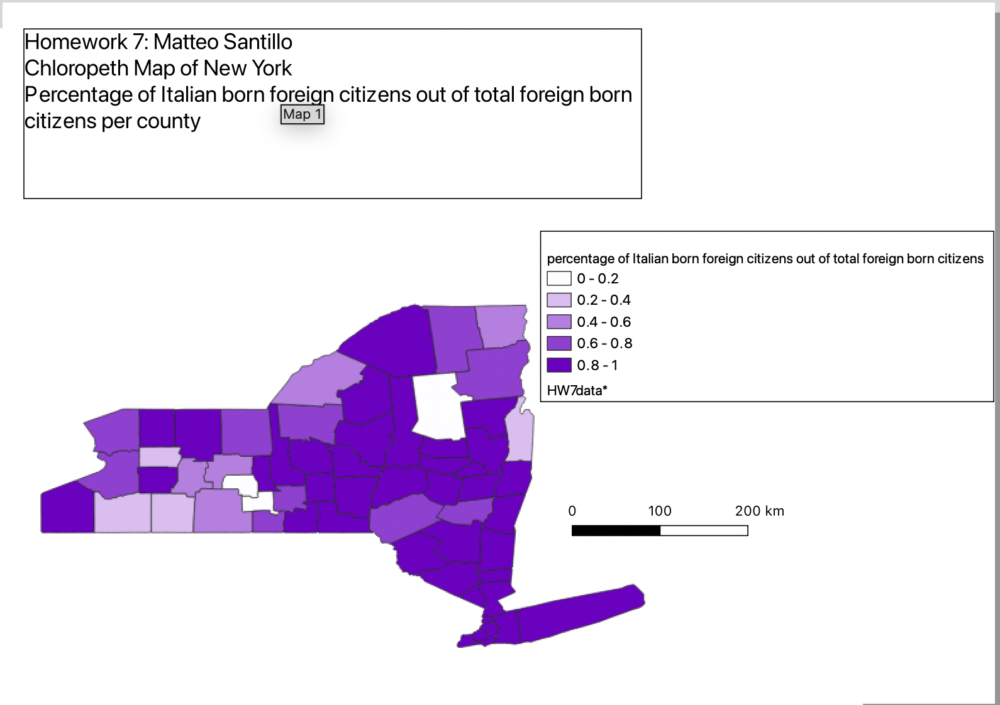

Homework 7: Choropleth
Matteo Santillo
The following map depicts percentages of Italian foreign born citizens. The data used for the map was created using a ratio of Italian born foreign citizens out of total foreign born citizens per county. Being an first generation Italian American, I was interested in looking into, what seems to be, the most popular state for Italians. As the map depicts the majority of the counties in New York feature greater than 50% Italian born out of all foreign born citizens. More broadly, the map below shows the distribution of the Italian born population in New York.

Data used for this project
CSV dataset
Link to geojson
Data used for this project:https://data.census.gov/map?t=543&g=0400000US36$0500000&tid=ACSDT5YSPT2015.B05006&cid=B05006_023E&layer=VT_2015_050_00_PY_D1&mode=thematic&loc=42.7882,-76.3854,z5.5142